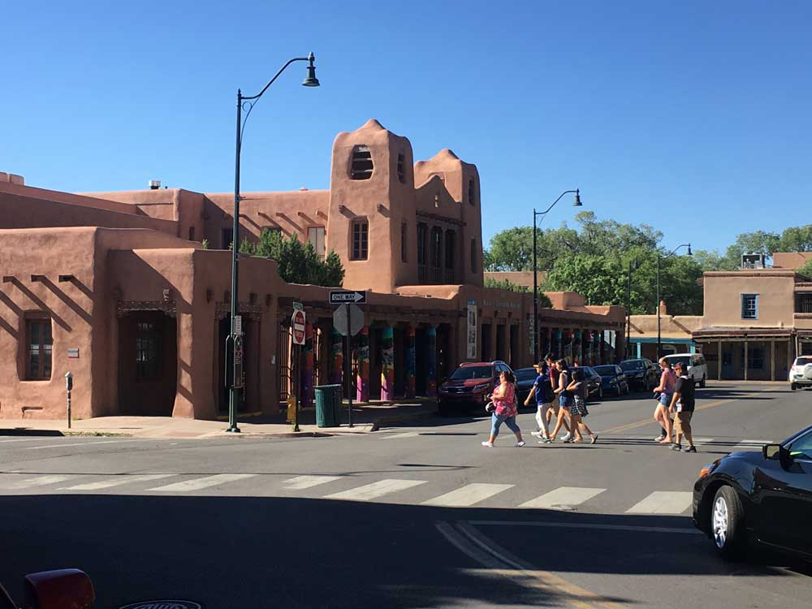
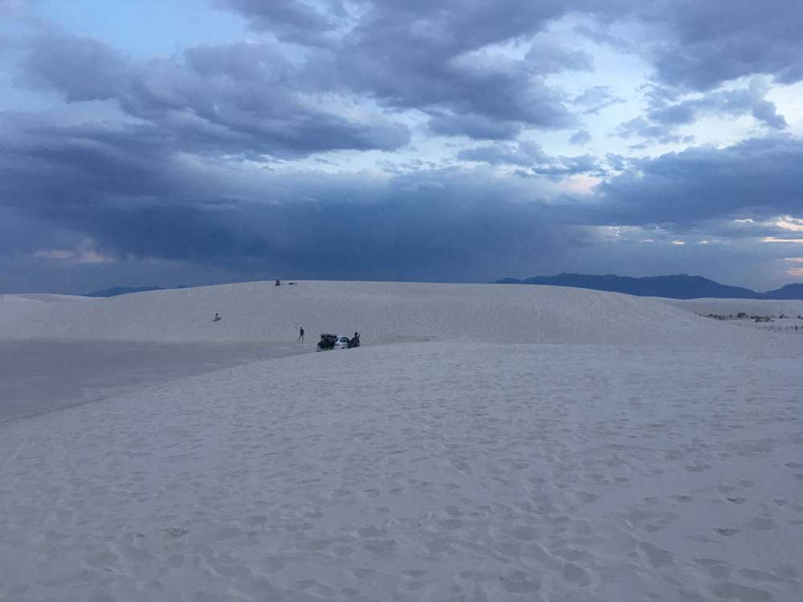

New Mexico was founded in 1610 as capital of Nuevo México (itself established as a province of New Spain in 1598). Due to their geographic locations, northern and eastern New Mexico exhibit a colder, alpine climate, while western and southern New Mexico exhibit a warmer, arid climate. Due to its large area and economic climate, New Mexico has a large U.S. military presence marked notably with the White Sands Missile Range. Various U.S. national security agencies base their research and testing arms in New Mexico, such as the Sandia and Los Alamos National Laboratories. During the 1940s, Project Y of the Manhattan Project developed and built the country's first atomic bomb and nuclear test, Trinity.
Its history has given New Mexico the highest percentage of Hispanic and Latino Americans, and the second-highest percentage of Native Americans as a population proportion (after Alaska). New Mexico is home to part of the Navajo Nation, 19 federally recognized Pueblo communities of Puebloan peoples, and three different federally recognized Apache tribes. In prehistoric times, the area was home to Ancestral Puebloans, Mogollon, and the modern extant Comanche and Utes inhabited the state. The largest Hispanic and Latino groups represented include the Hispanos of New Mexico, Chicanos, and Mexicans. These indigenous, Hispanic, Mexican, Latin, and American frontier roots are reflected in the eponymous New Mexican cuisine and the New Mexico music genre.
Southwest > New Mexico

Carlsbad Caverns National Park
The world's most famous cave system; huge underground chambers filled with spectacular, varied speleotherms, viewable by self-guiding tours. Most of the park contains limestone hills, crossed by several lightly used trails

Santa Fe
The oldest state capitol in America, containing many historic buildings, concentrated around the central plaza. Much can be seen by a leisurely walking tour along the tree-lined streets of the town center

White Sands National Park
Spectacular dunes of pure white gypsum, covering 275 square miles. The park has a few trails and viewing areas